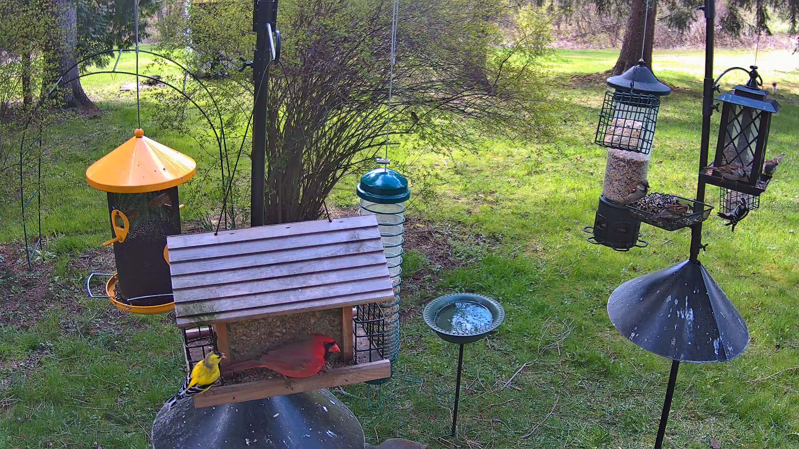
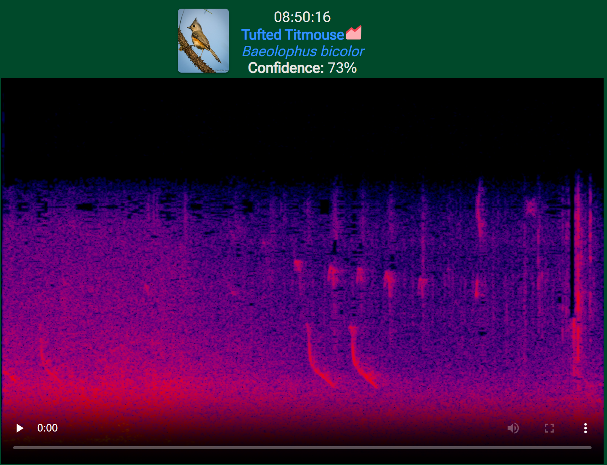
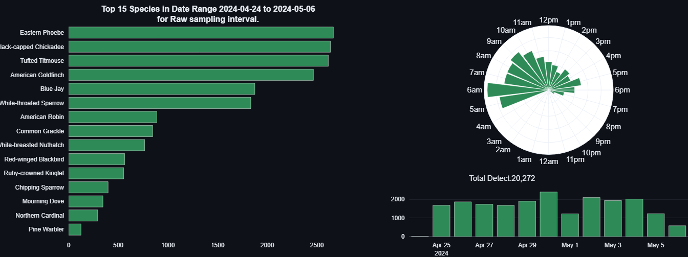

Enhancing Birdwatching with AI Technology
Live streaming + machine learning for backyard bird identification
Birdwatching has been a long-time hobby of mine, but I've found that modern life often makes it difficult to find the time to watch, identify, and catalog the birds that visit my yard. The patience — and presence — required to spot new and rare species often conflicts with not only my busy work schedule but also my ADHD. However, thanks to advances in technology, I've found a way to enjoy this activity more easily.
I've embarked on a project that combines my passion for birdwatching with my skills in technology, resulting in a live-streamed bird camera that anyone can access online. Here's how I did it.
Camera Setup

At the heart of my setup is the Reolink RLC-822A, a 4K dome camera that boasts impressive features suitable for capturing the finest details of backyard bird activity. This camera offers high resolution, optical zoom, auto-focus, and a wide-angle lens — an ideal choice for monitoring bird feeders, a bird bath, and surrounding bushes. The ability to capture high-quality audio is another plus, enabling viewers to hear the birds as well as see them.
I mounted the camera to weather-treated wood on a pole near the feeders and ran Category 6 outdoor/direct-burial cable from my POE switch. The POE connection both powers the camera and provides network access. I assigned the camera a static IP to ensure that other software in the project can consistently access its RTSP feed. Reolink publishes a helpful article on RTSP URLs that made integration straightforward.
Setting Up the Live Stream
To share the diversity of bird species visiting my yard with the world, I use datarhei Restreamer. This open-source software streams the live feed from the camera directly to my website and YouTube channel. Running on a dedicated Docker virtual machine within my Proxmox cluster and managed via Portainer, Restreamer makes continuous streaming effortless. You can catch the live action on my YouTube channel or by visiting live.bentownsend.com.
Intelligent Audio Analysis with BirdNET-Pi

One of the key components is BirdNET-Pi, a tool that leverages artificial intelligence to recognize and identify bird species based on their calls. This software employs machine learning models originally developed by researchers at Cornell University — not far from where I live — adding a local touch while utilizing world-class research.
Typically BirdNET-Pi runs on a Raspberry Pi, but I opted to deploy it on a Linux Container (LXC) on a Proxmox node, directly analyzing audio streams captured by the Reolink camera. The software processes audio in small, manageable segments and uses a trained AI model to detect and identify bird species. The accuracy is impressive across a wide range of calls.
Results are displayed through a user-friendly web interface publicly accessible at birds.bentownsend.com. This interface presents a real-time log of identified species, offering bird enthusiasts and researchers a valuable resource for observing the avian diversity in my area.

Putting It All Together
This project merges several technologies — 4K IP camera, RTSP streaming, Docker containers on Proxmox, Cloudflare Tunnels for public access, and AI machine learning — into a seamless backyard birdwatching experience. It solves a personal problem (finding time and patience to birdwatch) while producing something genuinely useful for anyone curious about the birds of Central New York.
Check out the Birds section of this site for photos and field notes on specific species I've spotted, and visit live.bentownsend.com to watch the live feed.